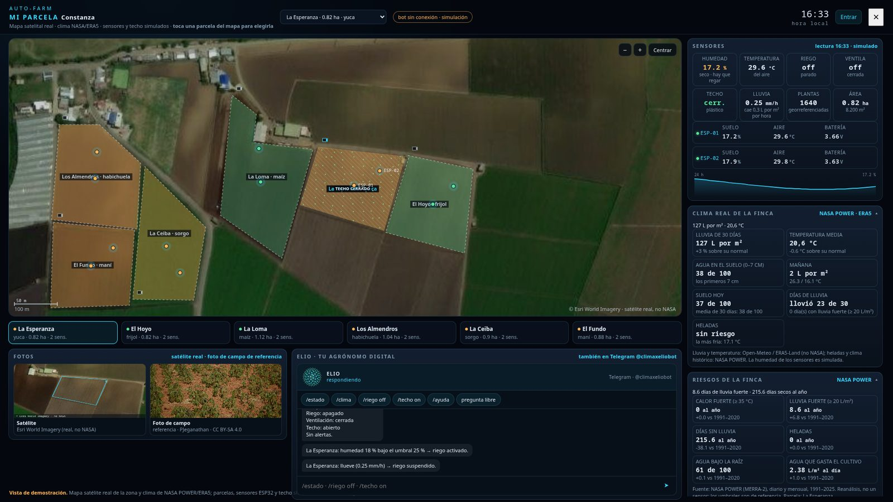
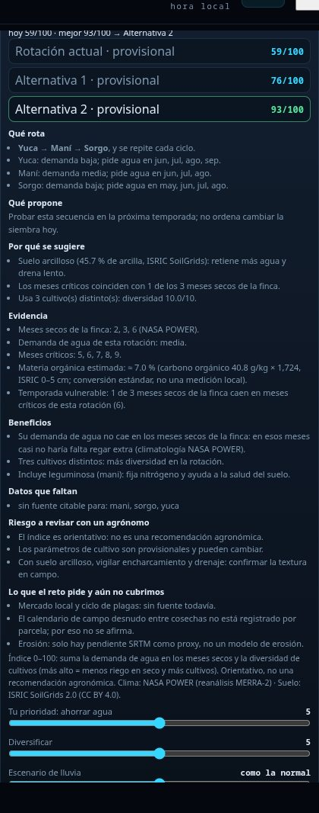
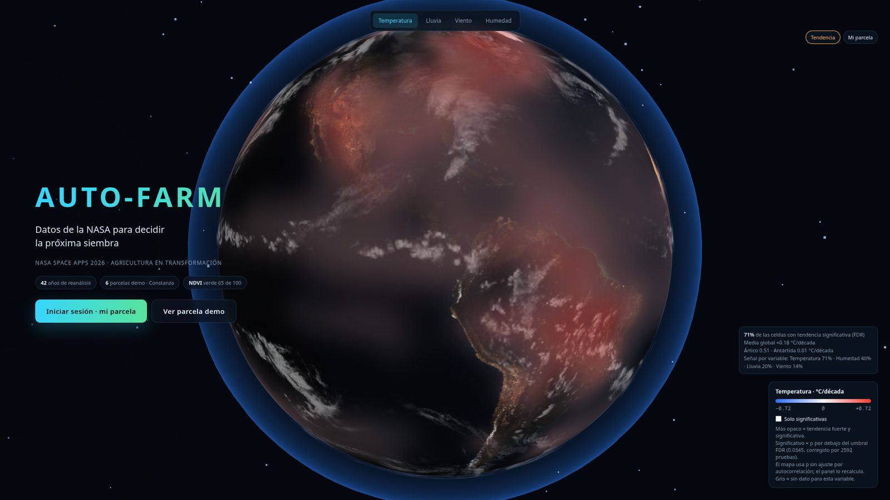
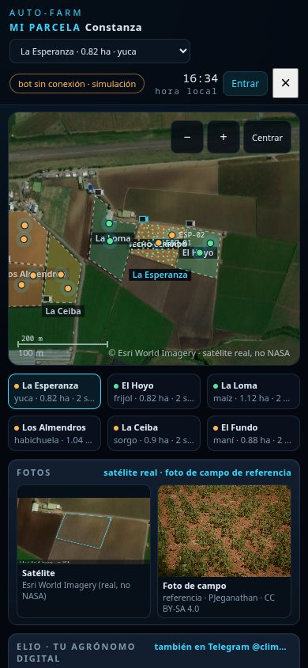

NASA Space Apps Challenge 2026 · Local Event República Dominicana · UNIROMANA
Datos de la NASA para decidir la próxima siembra.
Una finca de Constanza, 42 años de clima, imágenes satelitales y relieve: Auto-Farm los convierte en una recomendación que se entiende — qué sembrar después, cuándo regar y por qué — y en Elio, un asistente que responde con los datos de esa finca.
El problema
El clima de una finca ya no es el de hace 40 años, y los datos para verlo existen y son públicos. El problema es que están en portales técnicos: tablas, píxeles y siglas que no caben en la libreta del agricultor.
En la finca piloto de Azua la lluvia reciente es el doble de su normal; en Constanza, apenas un 3 % por encima. La misma temporada significa cosas distintas en cada lugar.
Una imagen satelital no dice «siembra yuca»: Auto-Farm traduce el dato a una decisión, con la fuente y el error a la vista, no como una caja negra.
Elio solo usa los datos estructurados de la finca y responde «no tengo ese dato» cuando le falta. Cita la fuente de cada cifra y deja las decisiones agronómicas al agrónomo.
Cómo funciona
El globo muestra la tendencia de 42 años de reanálisis. Al entrar, el mapa es imagen satelital real de la zona y las parcelas se eligen con un clic: sensores, clima, relieve y satélite de esa parcela, cada uno con su fuente.

La lluvia de los últimos 30 días, la humedad del suelo, el NDVI y el relieve se comparan contra su propia historia. Así se ve si la finca está en un año húmedo, seco o normal, sin depender de la memoria.

Tres rotaciones con puntaje sobre 100, el porqué, la evidencia que las sostiene, los huecos que faltan y el riesgo de cada una. Los pesos y el escenario de lluvia se mueven y el puntaje se recalcula a la vista.

El asistente
Elio es el agrónomo digital del proyecto. Responde por comandos, por pregunta libre (con cuenta) y por Telegram, con el contexto de la finca: clima, suelo, satélite, rotaciones y sensores simulados. Si un dato no está, lo dice en vez de estimarlo.
/estado/clima/riesgos
/rotaciones/parcela/ayuda
También en Telegram: @Eliofarmbot. La IA en vivo es para cuentas de cliente; la demo funciona sin gastar la API.

Transparencia
Un proyecto que decide sobre una finca tiene que decir de dónde sale cada número. Esto es lo que hay detrás de la pantalla:
| Elemento | Qué es | Estado |
|---|---|---|
| Clima histórico y riesgos | NASA POWER (reanálisis MERRA-2), 1984–2025, y los últimos 30 días de ERA5 vía Open-Meteo. POWER estima, no mide en la finca. | real |
| Satélite | NDVI de MODIS/Terra e IMERG de GPM, a través de NASA GIBS. El píxel de 250–289 m no es un sensor dentro de la parcela. | real |
| Relieve y suelo | SRTM (NASA/USGS) para pendiente; ISRIC SoilGrids para textura y materia orgánica (este último no es NASA). | real |
| Sensores, techo y cámara | Simulados en la demo, como se avisa en la propia app. El hardware (ESP32, válvulas, techo) no está instalado todavía. | simulado |
| Fincas de clientes | El mapa y la geometría son reales; el clima, satélite y rotaciones de esa finca dicen «por generar» hasta que se calculan. No se enseñan datos de otra finca. | por generar |
Datos y créditos
Fotos de cultivo: Wikimedia Commons con licencia CC BY / CC BY-SA, atribuidas en la app. NASA Space Apps Challenge es un evento de la NASA; este proyecto no está afiliado ni respaldado por la NASA.
Equipo
UNIROMANA · Local Event República Dominicana, NASA Space Apps Challenge 2026.
Demo
Vídeo del producto; la voz está generada con Edge TTS.